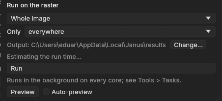

01The idea
A class map is a grid of codes; a report wants hectares, polygons and tables. Five tools of Janus go between the two, each a task in Tools → Tasks whose result opens as a layer and keeps its provenance (what was run, on what, with which options):
- Reproject, resample, clip
- Tools → Reproject, resample, clip...: a series' files through gdalwarp's own code, to a CRS, a pixel size or the grid of another layer, so two maps line up pixel for pixel.
- Areas
- Analysis → Areas: the area of each class at every date, each pixel counted with its true area on the ellipsoid, in ha, km² or %.
- Polygonize
- In a map's or a series' menu in the Layers panel: the patches of a map as polygons in a GeoPackage, each with its class, its area and its perimeter.
- Rasterize
- In a vector layer's menu: its features burned on the active series' grid, as a mask, their numbers or an attribute; a Zeit tool can then run only inside them.
- Zonal statistics over time
- In a vector layer's menu: each feature a zone, through every date of a series: the statistics of its values, or the area of each class, as CSV tables and a GeoPackage.
02The data
Two layers of the same coast, around Aracaju, the capital of Sergipe, in north-eastern Brazil:
- landsat
- The 41 annual Landsat medoid composites of a vegetation index of the trend test guide (path/row 215/067, 1985 to 2025, EPSG:4326 at about 30 m), cut to a window of 2000 × 2000 pixels, about 59 km a side, with 0 declared as no data (one VRT a year, made with GDAL).
- mapbiomas
- MapBiomas collection 4.1, Atlantic Forest biome, one map a year from 1985 to 2018. Each year is a GeoTIFF of the whole biome (77 947 × 94 203 pixels); here a box 200 pixels wider than the window on every side was cut from each (a VRT a year), with 0 as no data and the collection's class names and colours added to the band.
MapBiomas codes its classes by number: 3 is Forest Formation, 5 Mangrove, 15 Pasture, 20 Semi-Perennial Crop (sugar cane), 21 Mosaic of Agriculture and Pasture, 24 Urban Infrastructure, 33 River, Lake and Ocean. Janus reads the names and colours from the band and shows them in the Classes panel; a map without them can be named there by hand.
03Onto one grid
Two maps can be compared, combined or used one as the other's mask only when their pixels coincide. Tools → Reproject, resample, clip... warps the active series' files (or a run's map) and opens the result as a new series:

- To
- A CRS (EPSG:31983, ESRI:102033, a PROJ string, a WKT), the CRS of a layer, or the grid of a layer: its CRS, origin, pixel size and extent, so the maps align pixel for pixel. Otherwise Pixel size sets the cells, optionally aligned on multiples of the size (
-tap). - Resampling
- near, bilinear, cubic, average, mode, min, max or med. Mode, the most frequent class under each new pixel, is the default for a map of classes; near otherwise.
- Area
- The whole layer, the visible area, the ROI, or the polygons of a vector layer: the pixels outside them without a value, the result cropped to them (
-cutline). - Format
- Cloud-optimized GeoTIFFs, tiled GeoTIFFs, or Virtual: warped VRTs, nothing written, ready at once, the pixels computed as they are read.
The window writes the arguments of the gdalwarp command it runs, and the task's log keeps them: the result is the command's, bit for bit. Here, with To set to The grid of a layer, landsat, the arguments become -t_srs the layer's CRS, -te its extent and -ts 2000 2000, with mode. Run as the gdalwarp command on 2 threads, the 34 years took 10.5 s. MapBiomas and these Landsat composites share a pixel size (0.000269494585236°) and their origins fall on it, so the warp cut the maps without moving a class: every one of the 34 × 4 million pixels equals the source's.
![Janus with two layers, mapbiomas_grid (34 dates, 1985 to 2018, 2000 x 2000 px, Byte, WGS 84) over landsat (41 dates). The map at 2018, zoomed in: pasture in yellow, mosaic of agriculture and pasture in cream, sugar cane in mauve, annual crops in pink, forest in dark green, urban in red, a river and mangroves on the right. Pin 1 in a pasture at the top, pin 2 in a large forest at the bottom. The chart, steps and markers: pin 1 at forest from 1985 to 1989 and pasture from 1990, pin 2 at forest every year. The Statistics table for pin 1: class at the date Pasture (15), majority class Pasture 85%, 2 classes seen, 1 change, last change 1990: Forest Formation (3) to Pasture (15).](assets/img/maps-to-numbers/02-on-grid.jpg)
The class names after a warp
The gdalwarp command carries a map's colour table to the new files but not its class names; Janus's warp copies the names too. The years here were warped with the command, so their names were written back beside the files (a .aux.xml each, with GDAL), as naming them once in the Classes panel would.
04Areas by class and date
Analysis → Areas (or Areas... in the Classes panel) counts the classes of the active series at every date, at full resolution, on the whole layer or the ROI: Count starts a task. A pixel's area is not the same everywhere:
- Equal-area projection
- The geotransform's pixel area, the same everywhere.
- Longitudes and latitudes
- Each pixel's geodesic area on the CRS's ellipsoid: a degree of longitude shrinks towards the poles. Here, from 879.29 m² on the window's northern edge to 877.75 m² on its southern one, 878.53 at the centre.
- UTM and other projections
- Each pixel's geodesic area too, the note saying how far the nominal area is from it: in UTM the projection's scale, 0.05% off 110 to 230 km from the central meridian.
The geodesic areas are measured (with geographiclib) on a grid of at most 129 × 129 points across the map and interpolated between them, so the count costs no more than a histogram: the 34 years of 4 million pixels took 0.9 s on 2 threads.
![The Analysis panel at its Areas tab, the map in a window of its own: Map mapbiomas_grid (each date), whole layer, Count; units ha (ticked), km², %; Copy CSV, Save CSV; the note: pixel areas, longitudes and latitudes, each pixel's geodesic area, 877.75 to 879.29 m² (878.53 at the centre), 0.9 s, the CSV's folder. A bar per year from 1985 to 2018 with the classes stacked, about 260 000 ha each: forest in dark green at the bottom, pasture in yellow, the mosaic in cream, the legend of the 17 classes over the last years' bars. Below, the table of 2018: Forest Formation 397 149 pixels, 34 894.19 ha, 13.46%; Mangrove 9 266.42 ha, 3.57%; Pasture 1 174 447 pixels, 103 203.16 ha, 39.80%; Semi-Perennial Crop 19 827.84 ha, 7.65%; Mosaic of Agriculture and Pasture 63 270.88 ha, 24.40%; Urban Infrastructure 13 105.80 ha, 5.05%.](assets/img/maps-to-numbers/03-areas.jpg)
The bars are in ha, km² or %; Copy CSV and Save CSV... give the whole table, and areas.csv is written in the task's folder (date, value, class, pixels, area_m2, area_ha, area_km2, percent, a row per class and year). The mapped area is 259 297 ha every year. Some of its rows:
| Class | 1985 (ha) | 2000 (ha) | 2018 (ha) |
|---|---|---|---|
| Pasture | 122 807 | 146 248 | 103 203 |
| Mosaic of Agriculture and Pasture | 69 236 | 46 778 | 63 271 |
| Forest Formation | 36 895 | 37 132 | 34 894 |
| Semi-Perennial Crop | 1 817 | 1 827 | 19 828 |
| Urban Infrastructure | 4 086 | 6 442 | 13 106 |
| Mangrove | 8 395 | 9 422 | 9 266 |
Sugar cane grew elevenfold, almost all of it after 2000; the city tripled. The forest's total hardly moved: 36 895 ha in 1985, 34 894 in 2018, between 33 205 (2006) and 38 280 ha (2012) in between. Whether the same forest stood all along is another question, which the polygons answer.
Mapped area, not adjusted area
These are areas as mapped: pixels times their area, the map's errors included. The Validation guide estimates a class's area with its confidence interval from a sample. For a map of change years (LandTrendr's year of loss, CCDC's break), Area by value... in its menu counts the area by year.
05Polygons
Polygonize..., in the menu of a series (its date shown) or of a run's map in the Layers panel, turns the map's patches, the pixels of one value joined by their sides or corners, into polygons in a GeoPackage that opens as a vector layer. Each polygon gets:
value,class- The map's value and the class's name.
date- For a map of change dates in decimal years: the date (2019-06-14), or the year when it is whole.
area_ha,perimeter_m- Geodesic, on the CRS's ellipsoid, whatever the projection.
pixels- Its pixels.
mean_<map>- With Mean of: the mean of another map of the same grid in the polygon (a loss's magnitude).
A Minimum area first merges each smaller patch into the neighbour it shares the longest border with, the minimum mapping unit of a post-processing; a patch with no neighbour (a lone pixel of loss in a forest without a value around it) is left out. Simplify smooths the outlines to a tolerance in metres, their topology kept.
![The Polygonize window over Janus: mapbiomas_grid [1985]: 2000 x 2000 px, 19 classes named; Neighbours 4 (sides) ticked, 8 (and corners); Minimum area 0.0 ha; Simplify 0 m; Mean of none; Name mapbiomas_grid [1985] polygons; Columns: value, class, area_ha (geodesic), perimeter_m, pixels; a GeoPackage opened as a vector layer; Run. Behind it the map of 1985 zoomed in, forest patches in dark green among pasture and mosaic, every patch outlined by its polygon in dark brown; pin 1 in a forest patch. The chart: pin 1 at forest until 1989, pasture from 1990; its Statistics: class at the date Forest Formation (3), last change 1990: Forest Formation (3) to Pasture (15).](assets/img/maps-to-numbers/04-polygonize.jpg)
Polygonized whole, with the window's defaults (4 neighbours, no minimum area), MapBiomas' 1985 gave 38 582 polygons in 0.8 s, 259 296.86 ha in all, 10 784 of them forest. The forest's polygons add up to 36 895.005 ha, the Areas tab's count of its pixels to 36 895.008 ha: the polygons measured on the ellipsoid, the pixels by their interpolated areas, a few hundred square metres apart in 369 km². With 8 neighbours and a minimum area of 1 ha, the same function gave 11 089 polygons in 0.7 s, the same 259 297 ha in all.
The forest patches of 1985 of 100 ha or more were kept as a layer of their own, forest_1985.gpkg (with GDAL: value = 3 AND area_ha >= 100, the largest first): 49 patches, 13 399 ha, over a third of the forest of 1985. The largest, 910.9 ha, has a perimeter of 81.4 km and 10 369 pixels. The polygons follow the pixels' edges, and those on the window's western edge are cut by it.
06Back to the grid
Polygons go the other way too. Rasterize on the series' grid..., in a vector layer's menu, burns its features on the active series' grid (its CRS, origin, pixel size and size; the features reprojected to it), through GDAL's rasterizer, the function the gdal_rasterize command calls:
- Burn
- 1 inside, 0 outside (a mask), the feature's number (1, 2... in reading order), or an attribute: a number as it is, a text as classes numbered by name, their names and colours on the new layer. A later feature is burned over an earlier one.
- Pixels
- Those whose centre is inside, or every one touched.
![The Rasterize on the series' grid window over Janus: forest_1985.gpkg (49 features) on landsat's grid: 2000 x 2000 px; Burn 1 inside, 0 outside (a mask) ticked, the feature's number (1, 2...), an attribute; Pixels their centre inside ticked, every one touched; Name forest_1985.gpkg raster; the note: opens as a layer, a Zeit tool can then run only where it is not 0; the status: under way, it opens as a layer when ready. Behind it the whole window of 2000 x 2000 pixels: the mask, 0 in blue, the 49 patches in orange with their outlines, most of them in the west and north.](assets/img/maps-to-numbers/05-rasterize.jpg)
The mask took under a tenth of a second (the log says 0.0 s) and has 152 511 pixels at 1: exactly the sum of the patches' pixels, every one of them forest in 1985, and the same, pixel for pixel, as gdal_rasterize -burn 1 on the same grid. The polygons came from the pixels' edges, so their centres burn them back as they were.
A Zeit tool can then run inside the patches only. Under Run on the raster, a tool's panel has an Only list when a layer on the series' grid is open: everywhere, or where X is not 0, X a rasterized vector layer or a class map. Its pixels at 0 or without a value are left out of the run, and have no value in the outputs.


Tasks, Preview and Auto-preview." width="452" height="206" loading="lazy">07Zonal statistics over time
Zonal statistics over time..., in a vector layer's menu, makes each feature a zone and puts it through every date of the active series (or of a run's map). Its pixels are those whose centre is inside, or every pixel touched; a pixel in several features counts in each, as in rasterstats and exactextract. The features are burned once on the grid, then each date is read once, in blocks of rows on the processing threads.
- Values
- For each zone and date: the number of values, mean, standard deviation, least, percentiles 10, 25, 50, 75 and 90 (numpy's, linear) and largest.
- Classes
- Each class's pixels and area (each pixel's true area, as in Areas) and its share of the zone; with Transitions, from one date to another, the area of each class that became each other class.
- Change dates
- For a map of change years: each zone's area by year.
- Zones named by
- An attribute or the FID; Where: every feature, or those within the ROI.
The task writes zonal_long.csv (a row per zone, date and class or statistic), zonal_wide.csv (a row per zone, a column per date: the statistic chosen under Columns, or each class's hectares), transitions.csv when asked for, and a GeoPackage of the features with those columns added, opened as a layer. Analysis → Zonal draws a feature's series: its mean and median with the bands from the 10th to the 90th and the 25th to the 75th percentile, or its classes' areas stacked by date; it follows the feature picked in the attribute table.
![The Zonal statistics over time window over Janus: forest_1985.gpkg: 49 features, each a zone; Map mapbiomas_grid (each date); What: values their statistics, classes their areas (ticked), change dates the area by year; Transitions from 1985 to 2018 unticked; Zones named by the FID; Pixels their centre inside; Where every feature; Name forest_1985.gpkg zonal; the status Done in 0.8 s. Behind it the MapBiomas map of 2018 with the 49 patches drawn over it, and the Analysis panel at its Zonal tab: forest_1985.gpkg on mapbiomas_grid, Feature 1, 10369 pixels, 0.8 s, the tables and the GeoPackage in the zonal results folder, the pixel areas' note; a bar per year from 1985 to 2018 of feature 1's classes, nearly all forest in dark green with a thin band of pasture and mosaic at the top from 1990, the legend of six classes over the last years.](assets/img/maps-to-numbers/07-zonal.jpg)
The 49 patches through the 34 years took 0.8 s (no pixel in two patches here). Of their 13 399 ha of forest in 1985, 11 000 ha (82.1%) were forest in 2018; 1 442 ha had become pasture, 590 ha the mosaic of agriculture and pasture, 143 ha sugar cane. Patch by patch, the share still forest in 2018 goes from 99.3% to 37.2% (median 86.2%):
| Patch (FID) | 1985 (ha) | Forest in 2018 (ha) | Still forest | Its least forest | 2018, the rest |
|---|---|---|---|---|---|
| 1, the largest | 910.9 | 871.5 | 95.7% | 846.7 ha (1992) | annual crops 19.8 ha, mosaic 12.9 ha, pasture 5.5 ha |
| 11 | 405.0 | 174.1 | 43.0% | 173.9 ha (2008) | pasture 188.2 ha, mosaic 42.7 ha |
| 40 | 128.9 | 47.9 | 37.2% | 46.9 ha (2006) | water 40.8 ha, pasture 27.8 ha, mosaic 12.5 ha |
Patch 11, where pin 1 stands, lost a quarter of its forest by 1990 (304.3 ha left) and kept losing it until 2008; it has stayed between 174 and 184 ha since. A third of patch 40 is River, Lake and Ocean in 2018. Set beside section 04, the patches tell what the area's total hid: the large forests of 1985 lost 2 399 ha, while the forest outside them, in smaller patches and in new ones, went from 23 496 to 23 894 ha.
08A series by zone
The same patches over the Landsat series (landsat active, What: values) give each patch's statistics of the vegetation index at each of the 41 years: the medoids are noisy pixel by pixel, a patch's median much less so.
![Janus with three layers: forest_1985.gpkg (49 polygons) over landsat (active, 41 dates, 1985 to 2025, Float32) and mapbiomas_grid. The map of the index in 2018 from -0.07 (purple) to 0.43 (yellow), zoomed in, the 1985 forest patches outlined in dark brown over yellow and green; pin 1 in a patch at the top, pin 2 at the bottom. The chart, lines and markers: both pins between about 0.15 and 0.47, swinging from year to year, with their OLS trends dashed, pin 1's falling and pin 2's rising. The Statistics table: pin 1 mean 0.3002, median 0.31427, OLS trend -0.0016337 per year, largest drop 0.23196 (2008); pin 2 mean 0.34415, median 0.37101, OLS trend 0.0027158 per year, largest drop 0.22545 (1987).](assets/img/maps-to-numbers/08-index.jpg)
The median of each patch's pixels (from zonal_long.csv):
| Patch (FID) | 1985 | 1995 | 2005 | 2008 | 2018 | 2025 |
|---|---|---|---|---|---|---|
| 1 (95.7% still forest) | 0.334 | 0.332 | 0.373 | 0.334 | 0.378 | 0.444 |
| 11 (43.0%) | 0.373 | 0.309 | 0.290 | 0.253 | 0.303 | 0.341 |
| 40 (37.2%) | 0.356 | 0.276 | 0.209 | 0.201 | 0.264 | 0.311 |
Patch 1, nearly all forest still, is the highest after 2005 and rises to 0.444 in 2025. The two patches that lost most of their forest fell from about 0.36 in 1985 to 0.20–0.25 by 2005–2008, the years MapBiomas gives their least forest; patch 11's lowest median is 0.234 (2015), patch 40's 0.092 (2017), when part of it was water. Both are higher in 2025: the series goes seven years past the last map of MapBiomas collection 4.1, and the same zones follow it there. The 49 patches through the 41 years took 24.2 s, most of it reading: each medoid is stored a row of the whole 7478-pixel scene per block, so every date reads whole rows of the scene for the window's 2000 columns.
09Checked against the originals
Each tool was run against the program it stands in for, on the same files, comparing the results and the time (scripts tools/bench_*.py, results in bench/*.json; synthetic maps at 30 m, 8 threads where a tool takes them, GDAL 3.11.5):
| Janus | Against | Case | Janus | Original | Results |
|---|---|---|---|---|---|
| Reproject | gdalwarp; rioxarray | 8192 × 8192 to EPSG:4326, bilinear, COG | 2.13 s | 2.09 s; 5.2 s | bit for bit the command's |
| 8192 × 8192 classes to 90 m by mode | 0.38 s | 0.39 s; 0.72 s | bit for bit; rioxarray equal | ||
| Polygonize | gdal_polygonize; rasterio.features.shapes | 2048 × 2048, 6 classes: 11 732 polygons | 1.15 s | 0.75 s; 0.67 s | the same polygons |
| 4096 × 4096 years of loss: 45 711 polygons | 1.48 s | 1.43 s; 1.32 s | the same polygons | ||
| Areas | R's terra::expanse | 8 maps of 4096 × 4096 in UTM | 0.39 s | 187 s | within 7 × 10⁻⁶ |
| 8 maps of 4096 × 4096 in degrees | 0.38 s | 1.1 s | within 2 × 10⁻⁹ | ||
| Rasterize | gdal_rasterize; rasterio.features.rasterize | 11 732 polygons on 2048 × 2048, Int32 | 0.68 s | 2.69 s; 2.6 s | equal pixel for pixel |
| 45 711 polygons on 4096 × 4096, Int32 | 0.29 s | 9.6 s; 1.6 s | equal pixel for pixel | ||
| Zonal, values | rasterstats | 2100 zones, 8 dates of 4096 × 4096 | 1.8 s | 62 s | equal to single precision |
| Zonal, classes | rasterstats | the same, 5 classes | 1.3 s | 39 s | every count equal |
- Reproject
- Janus's files equal the command's in all four cases (also a 60 km window to EPSG:3857 by cubic, 0.12 s against 0.14 s, and a warped VRT, 0.03 s against 0.06 s). rioxarray's bilinear differs by 3 × 10⁻⁴ at the median: rasterio's reproject does not widen the kernel when it reduces, as gdalwarp does.
- Polygonize
- gdal_polygonize writes the polygons and their value alone; Janus adds the geodesic area and perimeter of each. With the shapes measured by pyproj's
Geod, rasterio took 2.0 s and 3.3 s. OGR's own geodesic area builds a transformation per polygon: measured that way, the first case took 13 s, against 1.2 s with all the rings transformed at once, as Janus does. - Areas
- The pixel counts equal numpy's. A count times the nominal pixel area, what a script usually does, took 1.5 s; it is off by up to 0.007% in UTM, and in degrees it gives square degrees, not square metres. On a map of years of loss 8192 × 4096 crossing UTM's central meridian, terra took 373 s and gave 4 × 10⁻⁴ less; PROJ's area factor, pixel by pixel, gives Janus's value.
- Rasterize
- GDAL burns into a GeoTIFF through its block cache; Janus burns strips of rows in memory (256 MB at most) and writes them, 2 to 30 times faster. The values burned by the centres give back the map polygonized.
- Zonal
- 2000 Voronoi cells and 100 circles over them, 327 975 pixels in more than one zone. Means within 1.7 × 10⁻⁷ and 90th percentiles within 2.5 × 10⁻⁶ of rasterstats' (single precision against double), counts, least, largest and deviations equal. R's exactextractr weights each pixel by the part of it inside: 20 s and 7 s, its means 1.9 × 10⁻⁴ (the median zone) to 2.5 × 10⁻³ (the 99th percentile) from the centres'.
10What next
- Adjusted areas: the Validation guide turns a map's areas into estimates with confidence intervals from a sample.
- Trends inside the zones: the Trend test guide tests whether a class or a region of the same Landsat series is really greening or browning.
- Change maps: LandTrendr's year of loss polygonized gets a
dateper polygon and, with Mean of, its magnitude; Area by value... and the zones' change dates give its hectares by year. - Expressions: the raster calculator combines the class map and the series, two series matched by year (the index where the year's class is 3, with
where), once they share a grid.
11References
- Souza, C. M., Jr., et al. (2020). Reconstructing three decades of land use and land cover changes in Brazilian biomes with Landsat archive and Earth Engine. Remote Sensing, 12(17), 2735. MapBiomas Project, collection 4.1 of the annual land use and land cover maps of Brazil, mapbiomas.org.
- GDAL: gdalwarp, gdal_polygonize, gdal_rasterize.
- Karney, C. F. F. (2013). Algorithms for geodesics. Journal of Geodesy, 87(1), 43–55. (geographiclib: the geodesic areas and perimeters.)
- Hijmans, R. J. terra: Spatial Data Analysis, R package (
expanse). - Perry, M. rasterstats: summarize geospatial raster datasets based on vector geometries, Python package.
- Baston, D. exactextractr: fast extraction from raster datasets using polygons, R package.